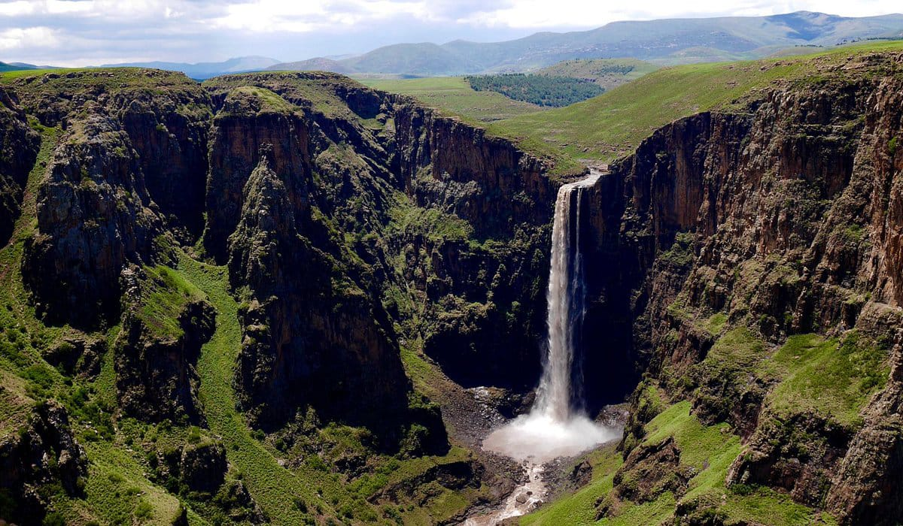
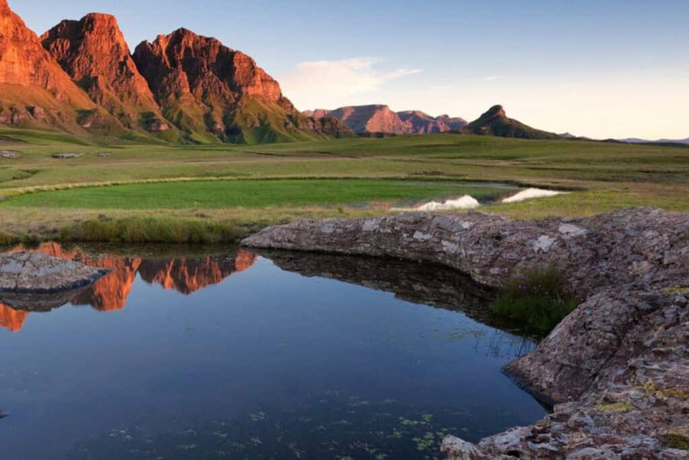
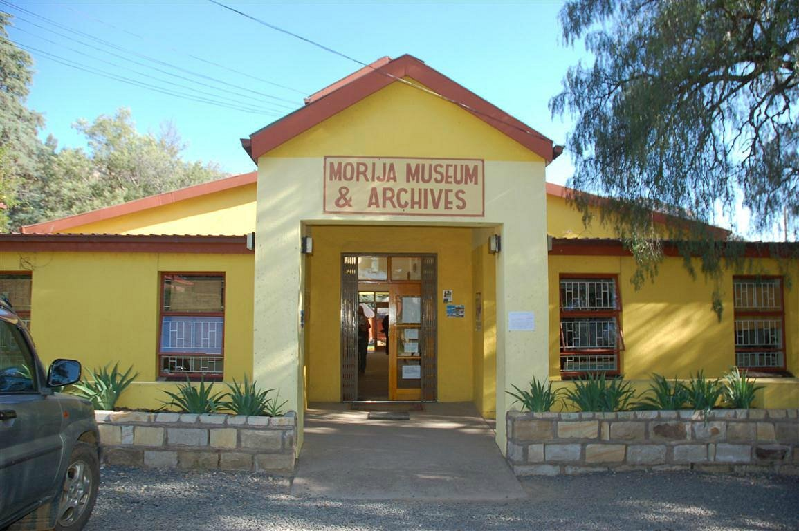
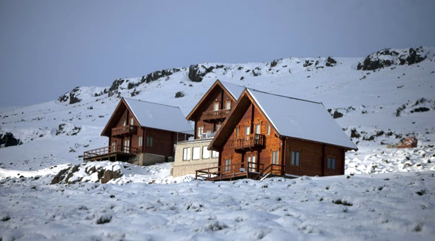
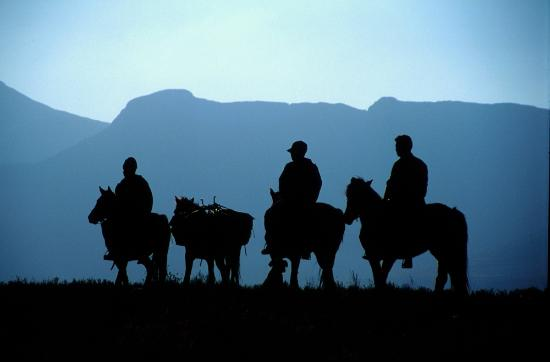
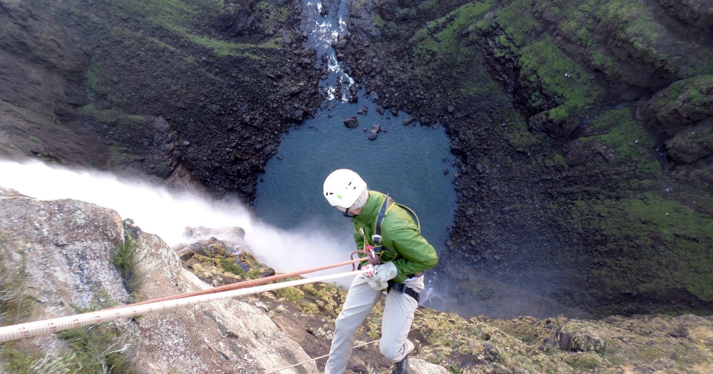

Maletsunyane Falls
Plunging 192 metres into a dramatic basalt gorge, Maletsunyane Falls is one of Africa's highest single-drop waterfalls. Located near the village of Semonkong ("Place of Smoke"), the falls are most spectacular during the summer rainy season.
Adventurous visitors can attempt the world's longest commercially operated single-drop abseil right alongside the falls — a 204-metre vertical drop not for the faint-hearted!
Plan Your VisitNatural Attractions

NaturalSehlabathebe National Park
Lesotho's first and only national park, Sehlabathebe is a UNESCO World Heritage Site. Its high-altitude wetlands, rare wildlife, and stunning rock formations make it a paradise for hikers and birdwatchers. The park is home to the endangered bearded vulture and the rare spiral aloe.
 Natural
Natural
Part of the massive Lesotho Highlands Water Project, Katse Dam is an engineering marvel — a double-curvature arch dam standing 185 metres tall. The surrounding reservoir is surrounded by dramatic mountain scenery and offers boat tours. Visitors can tour the dam wall and visitor centre.
 Natural
Natural
Ts'ehlanyane National Park
Home to Lesotho's only remaining indigenous forest, Ts'ehlanyane is a pocket of lush mountain wilderness. The Maliba Lodge within the park is one of Lesotho's most luxurious eco-retreats, perched dramatically above the Ts'ehlanyane River with breathtaking gorge views.
Cultural & Heritage Sites
 Heritage
Heritage
Thaba Bosiu
The "Mountain at Night" is the spiritual and historical birthplace of the Basotho nation. King Moshoeshoe I used this fortress plateau to resist invasion throughout the 19th century. Guided tours lead visitors to royal graves, defensive walls, and panoramic highland views.
 Heritage
Heritage
Ha Kome Cave Houses
These extraordinary cave dwellings were carved directly into cliff faces during the turbulent Difaqane wars. Entire families sheltered inside these natural caves for generations. Today they remain inhabited, giving visitors a remarkable window into ancient Basotho survival and ingenuity.

HeritageMorija Museum & Archives
The oldest institution in Lesotho, Morija Museum houses a remarkable collection of Basotho history, archaeology, and natural heritage. Morija also hosts the famous annual Morija Arts & Cultural Festival — a celebration of music, literature, and traditional performance arts.
Adventure Tourism

AdventureAfriski Mountain Resort
Africa's highest and most celebrated ski resort sits at 3,222 metres in the Maluti Mountains. From June to August, the slopes are blanketed in snow and thronged with skiers. Off-season, Afriski transforms into a mountain biking and hiking paradise with spectacular summit views.

AdventureBasotho Pony Trekking
The Basotho pony is as iconic as the country itself. Guided multi-day treks take riders through remote mountain passes, crossing rivers and stopping at traditional villages inaccessible by vehicle. Single-day rides are also available from Malealea and Semonkong lodges.

AdventureSemonkong Abseil
The world's longest commercially operated single-drop abseil drops 204 metres alongside Maletsunyane Falls. It's a bucket-list experience that takes roughly 20 minutes to complete and rewards participants with a waterfall view unlike anything else on Earth. Safety briefings are thorough and professional.